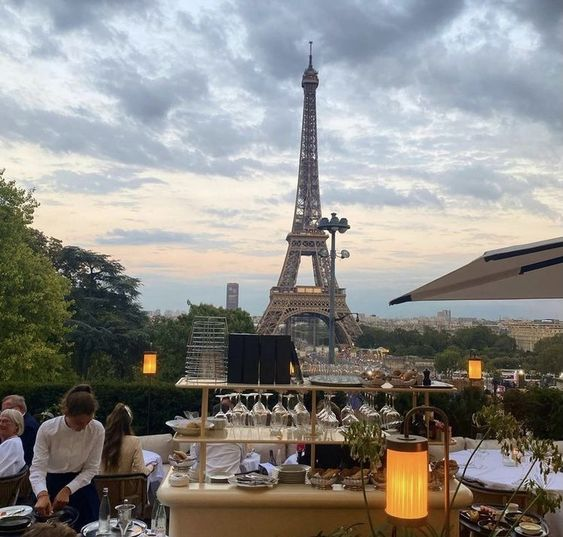

삶은 누군가에게 특별히 더 힘겨움을 주진 않는다. 하지만 내가 제일 힘들고,
내가 가장 안쓰러운 상황에 놓여 있다고 여기는 것은 당연하다. 그렇다, 모든
것은 언제 가는 지나간다. 하지만 시간이 흘러 다 사라진다고 해도, 현재
호의적이지 않음이 나에게 부정적 영향을 미치는 것은 어쩔 수 없다. 그렇다,
하지만, 어차피 젖고 있다면, 나의 진눈깨비가 비나 눈인지, 얼음이나
물인지, 아는 것만으로도 좋을 수 있고, 때론 모른 채 물러남을 지켜보는
것도 필요할 수 있다. ㅡ한강 ㅡ 흰